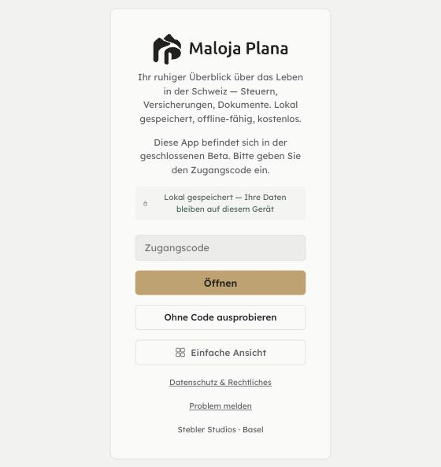
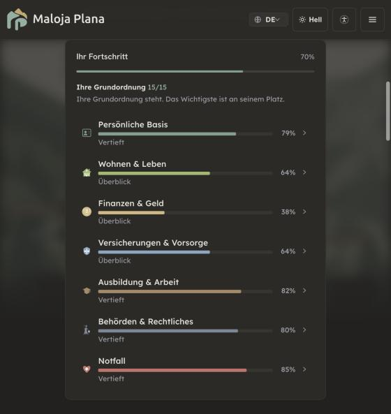

Links jeweils der heutige Stand (Bildschirmfoto von malojaplana.ch, Demo «Maria Muster», 23.10.2026), rechts der Vorschlag. Nur Entwurf, nichts davon ist gebaut. Das Landschaftsbild, die Farben und die Schriften stammen aus dem Repo.
1 · Der Eingang als Ort
Stardust lässt einen zuerst in die Welt treten. Hier liegt der Zugang direkt in der Passstrasse, und der Datenschutz wird vom grauen Kästchen zum Hauptversprechen. Von drei gleich lauten Knöpfen bleibt einer primär.
Heute

Vorschlag
Verstehen, was zusteht.Ordnen, was ansteht.
Ihr ruhiger Überblick über das Leben in der Schweiz: Steuern, Versicherungen, Dokumente.
Ihre Daten bleiben auf diesem Gerät.Lokal gespeichert, offline-fähig, kostenlos.
Logo: Anthrazit, weil es auf dem hellen Himmel steht. Das ist eure eigene Regel aus MarkenLogo.jsx: Farbe nach der Fläche, nicht nach dem Modus. Die farbige Fassung hätte dort zu wenig Kontrast.
Der Wortlaut des Versprechens stammt aus dem heutigen Text. Vor einer Änderung muss der Rechts-Prüfer drüber.
Kein neues Bild, nur das vorhandene, unscharf und abgedunkelt. Es kommen keine zusätzlichen KB dazu.
«Einfache Ansicht» wird vom dritten Knopf zum Link unten.
2 + 3 · Eine Zahl und ein Satz für heute
Heute stehen auf dem Dashboard «7/7 begonnen», «63 % ausgefüllt», «Ihr Fortschritt 70 %» und «Grundordnung 15/15», und 63 und 70 meinen offenbar nicht dasselbe. Stardust zeigt ein Objekt und einen Satz, der es deutet. Der Vorschlag führt «Was ist jetzt dran?» und die Fortschritts-Kreise zu einer Karte zusammen, die sich über das Bild schiebt.
Heute

Variante A · die Karte (erster Entwurf)
Verstehen, was zusteht.Ordnen, was ansteht.
Ausbildung
Behörden
Basis
Notfall
Wohnen
Versicherung
Finanzen
Wanderrucksack
63 %
Ihr Lebensordner
Die Grundordnung steht.
Am meisten offen ist noch bei Finanzen & Geld.
Keine offene Frist · Noch keine Sicherungsdatei
Bereiche
Persönliche Basisvertieft
Wohnen & LebenÜberblick
Finanzen & GeldÜberblick
Versicherungen & VorsorgeÜberblick
Ausbildung & Arbeitvertieft
Eine Zahl: nur noch der Ring. Welche Prozentzahl er zeigt (63 oder 70), müssen wir vorher klären, heute rechnen die beiden Stellen offenbar verschieden.
Ein Satz: kommt aus Daten, die es schon gibt: naechsterSchritt(), Steuerfrist, Erinnerungen, letzte Sicherung. Nichts Neues wird behauptet.
Die Bereichsliste bleibt, ohne eigene Prozente und Balken, als ruhige Alternative zur Strasse (Barrierefreiheit).
Die Bereichsfarben in der Liste sind Platzhalter, nicht die echten Tokens.
Variante C · Heute + Karte + Bereiche (neu)
Auf Fläche: dieselben Icons, etwas kleiner auf einer zart getönten Fläche in der Bereichsfarbe. Das bringt Stardusts weiche Flächen hinein, ohne ein Icon zu ändern. Mein Favorit.
Verstehen, was zusteht.Ordnen, was ansteht.
Ausbildung
Behörden
Basis
Notfall
Wohnen
Versicherung
Finanzen
Wanderrucksack
63 %
Ihr Lebensordner
Die Grundordnung steht.
Am meisten offen ist noch bei Finanzen & Geld.
Keine offene Frist · Noch keine Sicherungsdatei
Bereiche
Leistungen wie heute ›
Von heute bleibt: das ganze Bild mit den Stationen, die Bereiche mit Symbol, farbigem Balken und Pfeil, und alles darunter (Leistungen, Instrumente).
Aus A kommt: die Karte mit Zahl, Satz und einem Knopf. Sie ersetzt «Was ist jetzt dran?» und die beiden Kreise im Bild.
Was wegfällt: «Ihr Fortschritt 70 %», die Zeile «Grundordnung 15/15» und die Prozente je Bereich. Der Balken zeigt den Stand weiter, das Wort (Überblick, vertieft) sagt ihn in Sprache.
Die Icons sind eure echten Kapitel-Icons aus IconKern.jsx und IconMuenzen.jsx, unverändert.
Ablage · der Wegring, für woanders
Auf der Startseite passt er nicht, er ist aufgehoben. Denkbare Orte: eine Jahres- oder Kapitelübersicht, der Finanzbaum, ein «So steht Ihr Ordner»-Blatt zum Teilen.
Wegring
Verstehen, was zusteht.Ordnen, was ansteht.
70 %Ihr Lebensordner
Die Grundordnung steht.
Am meisten offen ist noch bei Finanzen & Geld.
Keine offene Frist · Noch keine Sicherungsdatei
Ein Objekt statt Kreise + Karte + Liste: der Ring trägt alle sieben Bereiche. Jeder Bereich hat sechs Punkte, gefüllt nach Fortschritt. Form (voll/leer) und Farbe tragen die Bedeutung zusammen, wie Stardusts Zyklus-Ring.
Tippen auf einen Bogen oder ein Kärtchen zeigt diesen Bereich in der Mitte und den nächsten Schritt darunter. Ohne Auswahl spricht der Ring über das Ganze.
Gestaffelt eingeblendet (Punkte, dann Zahl, dann Satz). Mit «Bewegung reduzieren» im System erscheint alles sofort.
70 % ist der Schnitt der sieben Bereiche, das entspricht heute «Ihr Fortschritt». Die «63 %» im Bild rechnen anders, das bleibt zu klären.
Was wegfällt: die Stationen auf der Strasse. Das Bild wird zur Stimmung, die Navigation macht der Ring. Ob ihr das wollt, ist ein echter Entscheid.
Die Felder im nächsten Schritt je Bereich («Säule 3a ergänzen» usw.) sind Platzhalter. Die Farben sind die echten aus lebensbereiche.js.